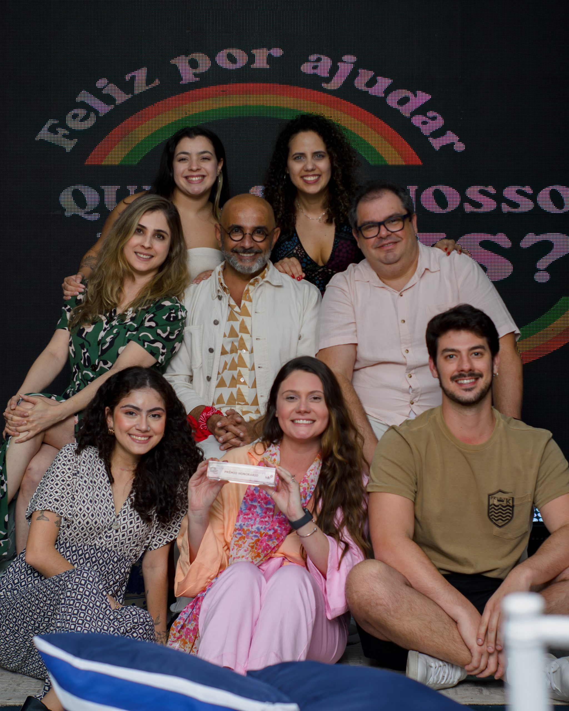
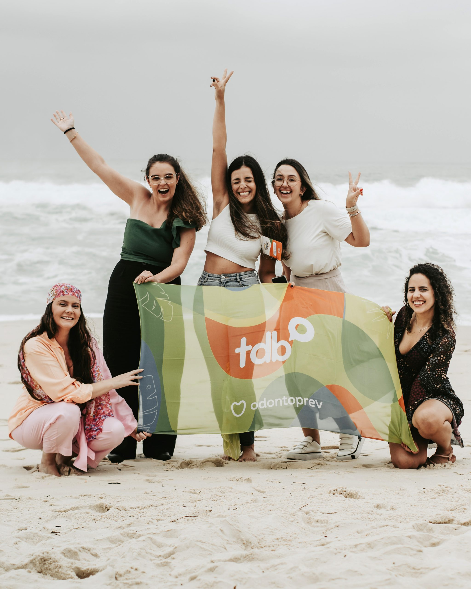
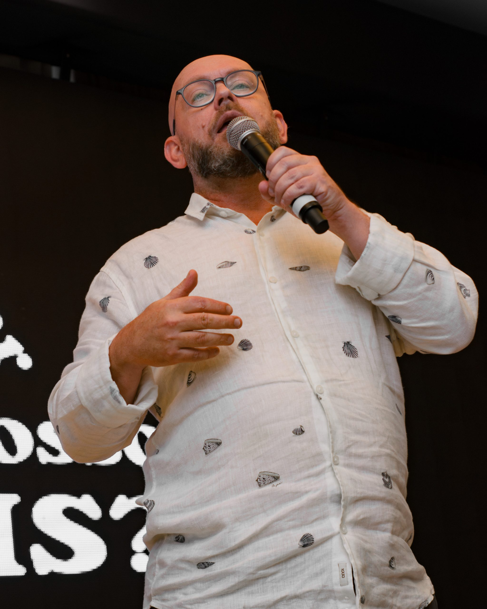

Melhor Dentista do Mundo
Durante o evento anual Sorriso do Bem, os dentistas e coordenadores voluntários são avaliados e premiados por seu impacto social. O título de Melhor Dentista do Mundo é concedido àquele que, além de atender pacientes, conseguiu transformar sua cidade por meio de parcerias, mudanças em políticas públicas, divulgação do projeto e mobilização comunitária.
Esse reconhecimento valoriza os profissionais que vão além do consultório e fazem do voluntariado um instrumento de transformação social e cidadania.


